#Imports here
import pandas as pd
import numpy as np
import seaborn as sns
import matplotlib.pyplot as plt
from sklearn.preprocessing import StandardScaler
from sklearn.model_selection import train_test_split
from sklearn.metrics import confusion_matrix
from sklearn.metrics import roc_curve
from sklearn.metrics import roc_auc_score
from sklearn.model_selection import cross_val_score
from sklearn.model_selection import KFold
from sklearn.linear_model import LogisticRegression
import warnings
from sklearn.exceptions import ConvergenceWarning
warnings.simplefilter(action='ignore', category=FutureWarning)
warnings.simplefilter(action='ignore', category=ConvergenceWarning)
warnings.filterwarnings("ignore", message="Maximum Likelihood optimization failed to")STAT207 Final Project - Clutch Completion In Penguins
Contribution Report:
Sammy Haskel - Section 1, 3, 5,
Isabella Iniguez - Section 3, 4, 7
Ava Zheng - Section 2, 7, Presentation
Syed Ammar Raza - Section 6, 8, 9
1. Introduction
Primary Research Goal
Build a predictive model that will effectively predict Clutch Completion for new datasets.
Secondary Research Goal
Ideally, the predictive model that we select will be able to yield reliable interpretive insights of the nature of the relationship between our explanatory variables and between our explanatory variables and Clutch Completion.
Ideally, the predictive model that we select will also be able to accurately reflect and describe the relationship between the explanatory variables and the response variable clutch competition.
Research Motivation
The motivation for why someone might want to build a predictive model that predicts Clutch Completion could be to assess whether or not features like flipper length and body mass play a role in a penguin completing clutch (Gorman, Kristen B et al.). An animal biologist/conservationist may find our model useful to assist with research or help with conservation of the penguins. (Davis, Lloyd S et al.). This person would likely desire a classifier that shows a high accuracy of positives (higher true positive rate) with a low rate of negatives (low false positive rate). This is because penguins who have completed clutch (had a nest with 2 eggs) are more likely to have one chick survive (United Parks & Resorts, n.d.-b). So if this person is actively working on conserving these species of penguins, by having a high true positive rate with a low false positive rate, they can have a better minimum guess for the number of chicks born.
CITATIONS:
Davis, Lloyd S et al. “The breeding biology of erect-crested penguins, Eudyptes sclateri: Hormones, behavior, obligate brood reduction and conservation.” PloS one vol. 17,10 e0275106. 12 Oct. 2022, doi:10.1371/journal.pone.0275106
Gorman, Kristen B et al. “Ecological sexual dimorphism and environmental variability within a community of antarctic penguins (Genus Pygoscelis).” PloS one vol. 9,3 e90081. 5 Mar. 2014, doi:10.1371/journal.pone.0090081
Penguins Reproduction. United Parks & Resorts. (n.d.-b). https://seaworld.org/animals/all-about/penguins/reproduction/
2. Dataset Discussion
Source
We got the dataset from Kaggle. It was downloaded from the following link: https://www.kaggle.com/datasets/parulpandey/palmer-archipelago-antarctica-penguin-data. It was downloaded on April 17th, 2024.
Original Dataset Information
The each row in the dataset represents one penguin and tells us information on the species, where it’s from, which study it is apart of, gender, measurements, and clutch completion. Kaggle does not state how the data was collected, but there is links that include more information on how the studies were conducted.
This dataset includes a large number of all the possible types, but one observation that could of been included could be estimated age of the penguins. Based on that estimated age is not included, the researcher would make conclusion based on a more generalized population of penguins and not based on estimated ages of penguins.
Selected Variables The variable we are choosing to be our response variable is clutch completion.
The explanatory variables are Species, Island, Body Mass (g), Flipper Length (mm), and Sex. We chose to use these variables because they consist of data that is collected and unique to each penguin.
df=pd.read_csv('penguins_lter.csv')
df.head(5)| studyName | Sample Number | Species | Region | Island | Stage | Individual ID | Clutch Completion | Date Egg | Culmen Length (mm) | Culmen Depth (mm) | Flipper Length (mm) | Body Mass (g) | Sex | Delta 15 N (o/oo) | Delta 13 C (o/oo) | Comments | |
|---|---|---|---|---|---|---|---|---|---|---|---|---|---|---|---|---|---|
| 0 | PAL0708 | 1 | Adelie Penguin (Pygoscelis adeliae) | Anvers | Torgersen | Adult, 1 Egg Stage | N1A1 | Yes | 11/11/07 | 39.1 | 18.7 | 181.0 | 3750.0 | MALE | NaN | NaN | Not enough blood for isotopes. |
| 1 | PAL0708 | 2 | Adelie Penguin (Pygoscelis adeliae) | Anvers | Torgersen | Adult, 1 Egg Stage | N1A2 | Yes | 11/11/07 | 39.5 | 17.4 | 186.0 | 3800.0 | FEMALE | 8.94956 | -24.69454 | NaN |
| 2 | PAL0708 | 3 | Adelie Penguin (Pygoscelis adeliae) | Anvers | Torgersen | Adult, 1 Egg Stage | N2A1 | Yes | 11/16/07 | 40.3 | 18.0 | 195.0 | 3250.0 | FEMALE | 8.36821 | -25.33302 | NaN |
| 3 | PAL0708 | 4 | Adelie Penguin (Pygoscelis adeliae) | Anvers | Torgersen | Adult, 1 Egg Stage | N2A2 | Yes | 11/16/07 | NaN | NaN | NaN | NaN | NaN | NaN | NaN | Adult not sampled. |
| 4 | PAL0708 | 5 | Adelie Penguin (Pygoscelis adeliae) | Anvers | Torgersen | Adult, 1 Egg Stage | N3A1 | Yes | 11/16/07 | 36.7 | 19.3 | 193.0 | 3450.0 | FEMALE | 8.76651 | -25.32426 | NaN |
print("Length of original dataframe:", len(df))Length of original dataframe: 3443. Dataset Cleaning
First, we’ll create a new dataframe with only the relevant variable columns we’ll be exploring.
df_vars = df[['Clutch Completion','Species','Island','Body Mass (g)','Flipper Length (mm)','Sex']]
df_vars.head()| Clutch Completion | Species | Island | Body Mass (g) | Flipper Length (mm) | Sex | |
|---|---|---|---|---|---|---|
| 0 | Yes | Adelie Penguin (Pygoscelis adeliae) | Torgersen | 3750.0 | 181.0 | MALE |
| 1 | Yes | Adelie Penguin (Pygoscelis adeliae) | Torgersen | 3800.0 | 186.0 | FEMALE |
| 2 | Yes | Adelie Penguin (Pygoscelis adeliae) | Torgersen | 3250.0 | 195.0 | FEMALE |
| 3 | Yes | Adelie Penguin (Pygoscelis adeliae) | Torgersen | NaN | NaN | NaN |
| 4 | Yes | Adelie Penguin (Pygoscelis adeliae) | Torgersen | 3450.0 | 193.0 | FEMALE |
df_vars.isna().sum()Clutch Completion 0
Species 0
Island 0
Body Mass (g) 2
Flipper Length (mm) 2
Sex 10
dtype: int64df_dropna = df_vars.dropna()
len(df) - len(df_dropna)10Missing Value Detection and Cleaning
Our dataset did have some implicit mising values. Looking at all the unique values of Sex, there were some penguins who had a period in place of a gender. To deal with the missing value, we decided to drop the row with the missing values.
The pro of using this method as it removes the missing information. The con is that we are losing information, but as we are only dropping one row out of 334 it is relatively negligible.
df_dropna['Clutch Completion'].unique()array(['Yes', 'No'], dtype=object)df_dropna['Sex'].unique()array(['MALE', 'FEMALE', '.'], dtype=object)df_dropna['Island'].unique()array(['Torgersen', 'Biscoe', 'Dream'], dtype=object)df_dropna['Species'].unique()array(['Adelie Penguin (Pygoscelis adeliae)',
'Chinstrap penguin (Pygoscelis antarctica)',
'Gentoo penguin (Pygoscelis papua)'], dtype=object)df_dropna['Body Mass (g)'].unique()array([3750., 3800., 3250., 3450., 3650., 3625., 4675., 3200., 4400.,
3700., 4500., 3325., 4200., 3400., 3600., 3950., 3550., 3150.,
3900., 3300., 4150., 4650., 3100., 3000., 4600., 3425., 3500.,
4300., 4050., 2900., 2850., 3350., 4100., 3050., 4450., 4250.,
4000., 4700., 4350., 3725., 4725., 3075., 2925., 3175., 4775.,
3825., 4275., 4075., 3775., 3875., 3275., 4475., 3975., 3475.,
3525., 3575., 4550., 3850., 4800., 2700., 3675., 5700., 5400.,
5200., 5150., 5550., 5850., 6300., 5350., 5000., 5050., 5100.,
5650., 5250., 6050., 4950., 4750., 4900., 5300., 4850., 5800.,
6000., 5950., 4625., 5450., 5600., 4875., 4925., 4975., 5500.,
4575., 4375., 5750.])df_dropna['Flipper Length (mm)'].unique()array([181., 186., 195., 193., 190., 182., 191., 198., 185., 197., 184.,
194., 174., 180., 189., 187., 183., 172., 178., 188., 196., 200.,
192., 202., 205., 208., 203., 199., 176., 210., 201., 212., 206.,
207., 211., 230., 218., 215., 219., 209., 214., 216., 213., 217.,
221., 222., 220., 225., 224., 231., 229., 223., 228., 226.])df_cleaned = df_dropna[df_dropna['Sex'] != '.'].reset_index(drop=True)
len(df_dropna) - len(df_cleaned)1print("Number of rows after cleaning:", len(df_cleaned))Number of rows after cleaning: 333All categorical explanatory variables have suffiecently large observations per category (at least 10)
df_cleaned.groupby('Species').agg('count').reset_index()| Species | Clutch Completion | Island | Body Mass (g) | Flipper Length (mm) | Sex | |
|---|---|---|---|---|---|---|
| 0 | Adelie Penguin (Pygoscelis adeliae) | 146 | 146 | 146 | 146 | 146 |
| 1 | Chinstrap penguin (Pygoscelis antarctica) | 68 | 68 | 68 | 68 | 68 |
| 2 | Gentoo penguin (Pygoscelis papua) | 119 | 119 | 119 | 119 | 119 |
df_cleaned.groupby('Island').agg('count').reset_index()| Island | Clutch Completion | Species | Body Mass (g) | Flipper Length (mm) | Sex | |
|---|---|---|---|---|---|---|
| 0 | Biscoe | 163 | 163 | 163 | 163 | 163 |
| 1 | Dream | 123 | 123 | 123 | 123 | 123 |
| 2 | Torgersen | 47 | 47 | 47 | 47 | 47 |
df_cleaned.groupby('Sex').agg('count').reset_index()| Sex | Clutch Completion | Species | Island | Body Mass (g) | Flipper Length (mm) | |
|---|---|---|---|---|---|---|
| 0 | FEMALE | 165 | 165 | 165 | 165 | 165 |
| 1 | MALE | 168 | 168 | 168 | 168 | 168 |
Outlier Cleaning - Two Variable Outlier Inspection
We only have one pair of numerical explanatory variables, and we see that there arent any significant nor obvious outliers, so we make the decision to no drop any rows. There isn’t a risk of certain points skewing the model.
sns.scatterplot(x=df_cleaned['Body Mass (g)'],y=df_cleaned['Flipper Length (mm)'])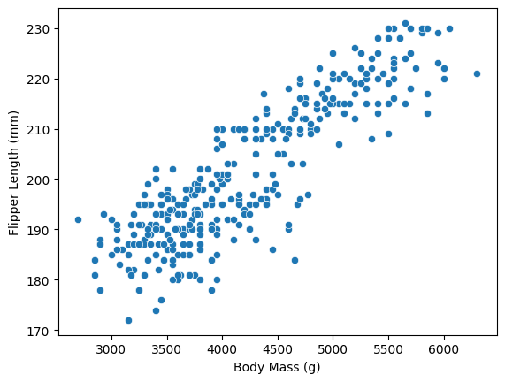
Other Data Cleaning
When we tried to answer our research questions, we did not discover any other data cleaning ideas that might help make the answer to the research question more clear. Thus, we choose to not perfrom any additional data cleaning.
After all cleaning, we are left with a dataset with 333 rows and 6 columns. We dropped a total of 11 rows.
df_cleaned| Clutch Completion | Species | Island | Body Mass (g) | Flipper Length (mm) | Sex | |
|---|---|---|---|---|---|---|
| 0 | Yes | Adelie Penguin (Pygoscelis adeliae) | Torgersen | 3750.0 | 181.0 | MALE |
| 1 | Yes | Adelie Penguin (Pygoscelis adeliae) | Torgersen | 3800.0 | 186.0 | FEMALE |
| 2 | Yes | Adelie Penguin (Pygoscelis adeliae) | Torgersen | 3250.0 | 195.0 | FEMALE |
| 3 | Yes | Adelie Penguin (Pygoscelis adeliae) | Torgersen | 3450.0 | 193.0 | FEMALE |
| 4 | Yes | Adelie Penguin (Pygoscelis adeliae) | Torgersen | 3650.0 | 190.0 | MALE |
| ... | ... | ... | ... | ... | ... | ... |
| 328 | No | Gentoo penguin (Pygoscelis papua) | Biscoe | 4925.0 | 214.0 | FEMALE |
| 329 | Yes | Gentoo penguin (Pygoscelis papua) | Biscoe | 4850.0 | 215.0 | FEMALE |
| 330 | Yes | Gentoo penguin (Pygoscelis papua) | Biscoe | 5750.0 | 222.0 | MALE |
| 331 | Yes | Gentoo penguin (Pygoscelis papua) | Biscoe | 5200.0 | 212.0 | FEMALE |
| 332 | Yes | Gentoo penguin (Pygoscelis papua) | Biscoe | 5400.0 | 213.0 | MALE |
333 rows × 6 columns
4. Preliminary Analysis
Relationships between the Response Variable and the Explanatory Variables
Species has somewhat of a strong relationship with Clutch Completion, because there is a difference between the Clutch Completion rates (the two bars) depending on the Species of penguin.
temp = pd.crosstab(df_cleaned['Species'], df_cleaned['Clutch Completion'], normalize='index')
temp.plot.bar(rot=25)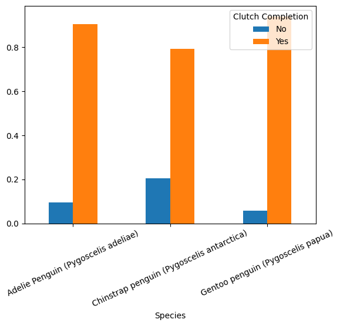
Island has somewhat of a strong relationship with Clutch Completion, because there is a difference between the Clutch Completion rates (the two bars) depending on the Island the penguins reside in.
temp = pd.crosstab(df_cleaned['Island'], df_cleaned['Clutch Completion'], normalize='index')
temp.plot.bar()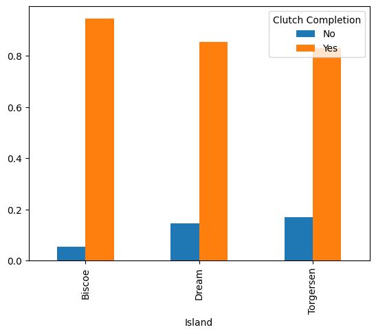
Sex has a weak relationship with Clutch Completion, because there is no apparent difference between the Clutch Completion rates (the two bars) depending on the Island the penguins reside in.
temp = pd.crosstab(df_cleaned['Sex'], df_cleaned['Clutch Completion'], normalize='index')
temp.plot.bar()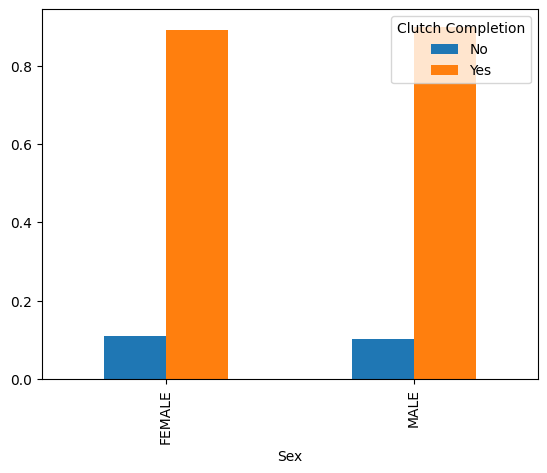
Body Mass (g) has a somewhat strong relationship with Clutch Completion, because there is a lot of overlap in the IQR of Body Mass depending on the Clutch Completion state.
sns.boxplot(x='Clutch Completion', y='Body Mass (g)', data=df_cleaned)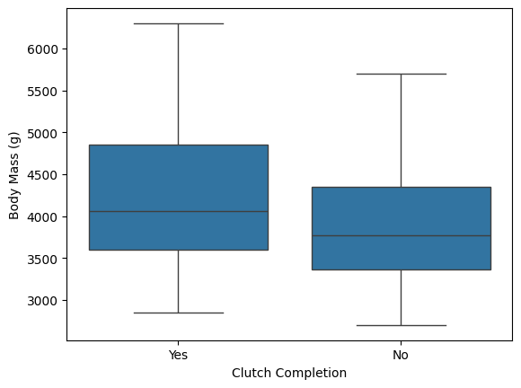
Flipper Length (mm) has a somewhat strong relationship with Clutch Completion, because there is a difference in the IQR of Flipper Lengths depending on the Clutch Completion state.
sns.boxplot(x='Clutch Completion', y='Flipper Length (mm)', data=df_cleaned)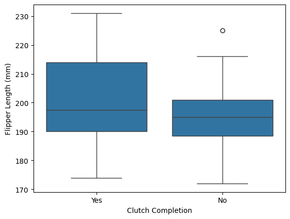
Relationships between Explanatory Variable Pairs
Species has a very strong association with Island, because there is a large difference in the distribution of species of penguin depending on the Island.
temp = pd.crosstab(df_cleaned['Island'], df_cleaned['Species'], normalize='index')
temp.plot.bar()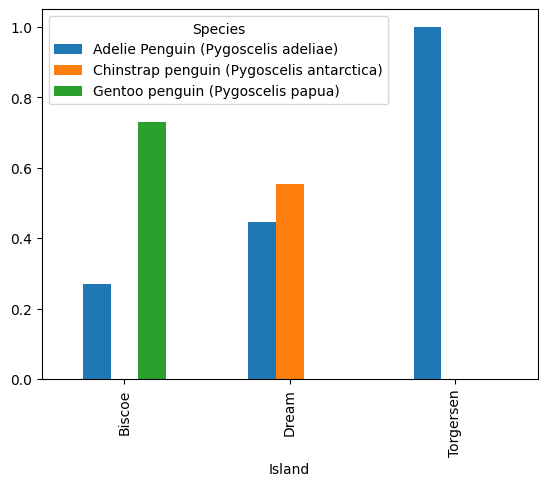
Sex has a weak association with Island, because there is minor difference in the distribution of sex depending on the Island.
temp = pd.crosstab(df_cleaned['Island'], df_cleaned['Sex'], normalize='index')
temp.plot.bar()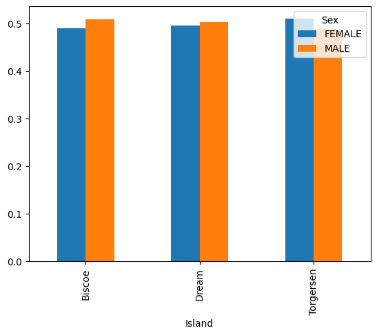
Body Mass (g) has a strong association with Island, because there is a large difference in the Body Mass IQRs between Islands.
sns.boxplot(x='Island', y='Body Mass (g)', data=df_cleaned)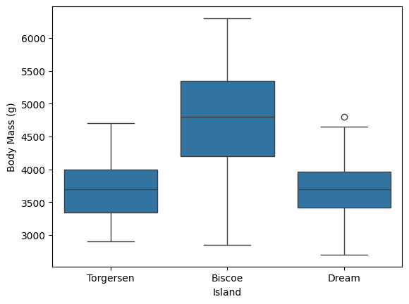
Flipper Length (mm) has a strong association with Island, because there is a large difference in the Flipper Length IQRs between Islands.
sns.boxplot(x='Island', y='Flipper Length (mm)', data=df_cleaned)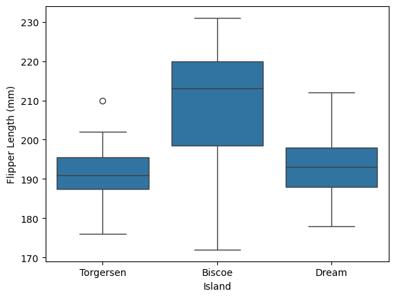
Species has a very weak association with Sex, because there is relatively no difference in the distribution of sex depending on the Species.
temp = pd.crosstab(df_cleaned['Species'], df_cleaned['Sex'], normalize='index')
temp.plot.bar()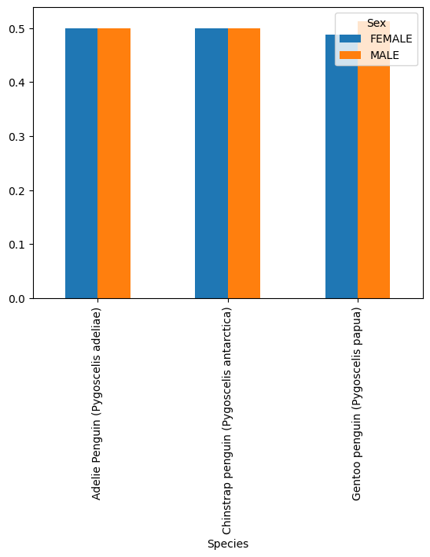
Body Mass (g) has a strong association with Species, because there is a large difference in the Body Mass IQRs between Species.
sns.boxplot(x='Species', y='Body Mass (g)', data=df_cleaned)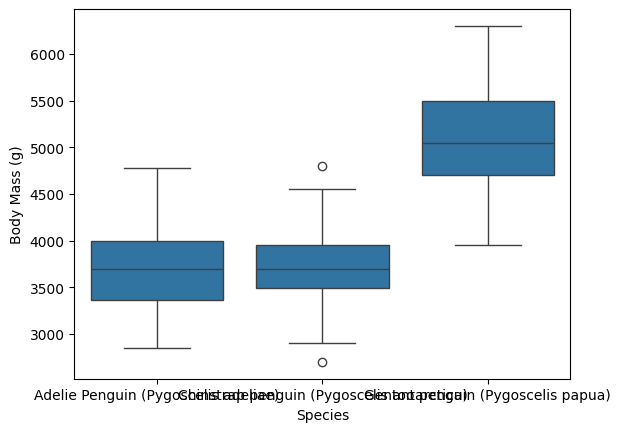
Flipper Length (mm) has a strong association with Species, because there is a large difference in the Flipper Length IQRs between Species.
sns.boxplot(x='Species', y='Flipper Length (mm)', data=df_cleaned)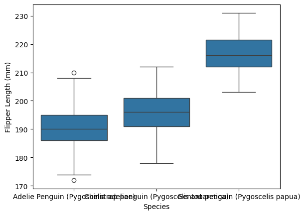
Flipper Length (mm) has a strong association with Sex, because there is a difference in the Flipper Length IQRs between Sexes.
sns.boxplot(x='Sex', y='Flipper Length (mm)', data=df_cleaned)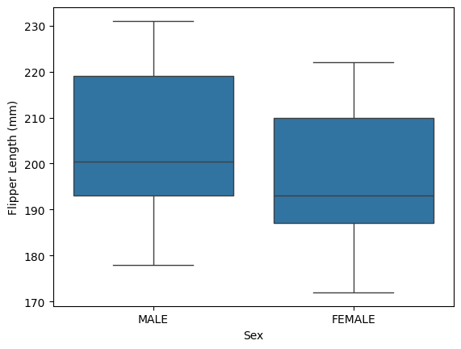
Body Mass (g) has a strong association with Sex, because there is a difference in the Flipper Length IQRs between Sexes.
sns.boxplot(x='Sex', y='Body Mass (g)', data=df_cleaned)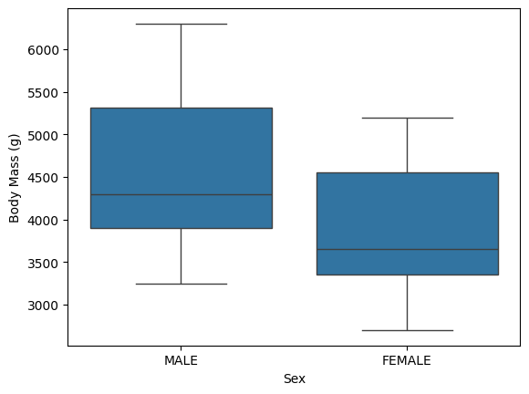
Body Mass (g) has a strong association with Flipper Length (mm), because there is a fairly obvious linear relationship between Body Mass and Flipper Length as per the scatterplot.
sns.scatterplot(x='Body Mass (g)', y='Flipper Length (mm)', data=df_cleaned)Interaction Effects
First we convert the Yes/No Clutch Completion response variable into a 1/0 y variable.
df_cleaned['y'] = pd.get_dummies(df_cleaned['Clutch Completion'], drop_first=True, dtype=int)We see below that the line of best fit between Body Mass (g) and Clutch Completion changes between the value of Species, thus there is likely a large interaction between the two explanatory variables on Clutch Completion.
sns.lmplot(x='Body Mass (g)', y='y', hue='Species', data=df_cleaned, logistic=True, ci=False)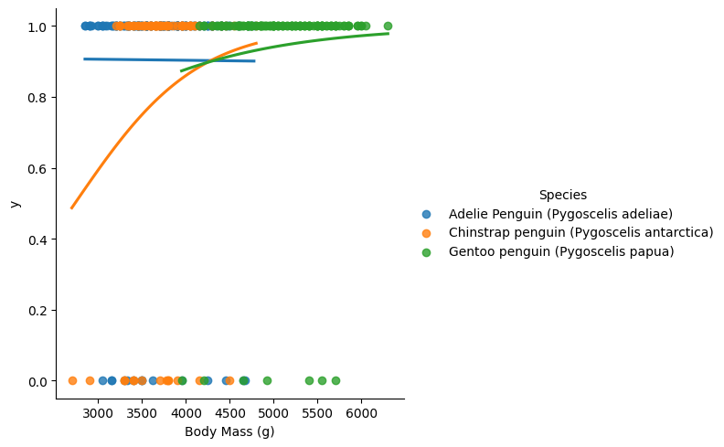
We see below that the line of best fit between Flipper Length (mm) and Clutch Completion changes between the value of Species, thus there is likely a large interaction between the two explanatory variables on Clutch Completion.
sns.lmplot(x='Flipper Length (mm)', y='y', hue='Species', data=df_cleaned, logistic=True, ci=False)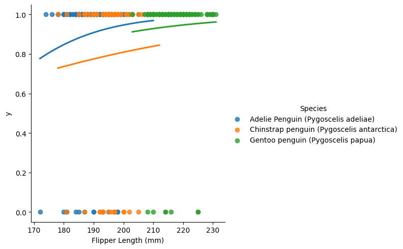
We see below that the line of best fit between Body Mass (g) and Clutch Completion changes between the value of Island, thus there is likely a large interaction between the two explanatory variables on Clutch Completion.
sns.lmplot(x='Body Mass (g)', y='y', hue='Island', data=df_cleaned, logistic=True, ci=False)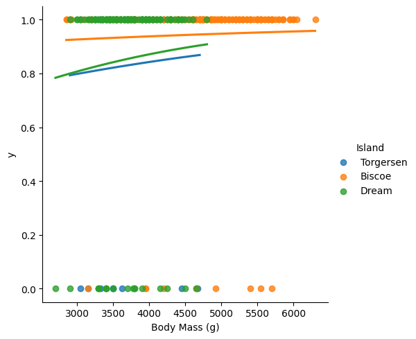
We see below that the line of best fit between Flipper Length (mm) and Clutch Completion changes between the value of Island, thus there is likely a large interaction between the two explanatory variables on Clutch Completion.
sns.lmplot(x='Flipper Length (mm)', y='y', hue='Island', data=df_cleaned, logistic=True, ci=False)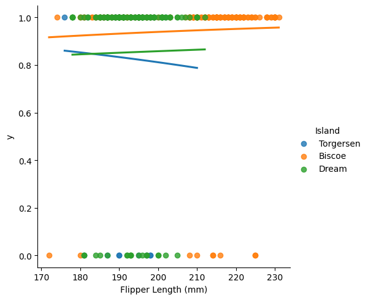
We see below that the line of best fit between Body Mass (g) and Clutch Completion changes between the value of Sex, thus there is likely a large interaction between the two explanatory variables on Clutch Completion.
sns.lmplot(x='Body Mass (g)', y='y', hue='Sex', data=df_cleaned, logistic=True, ci=False)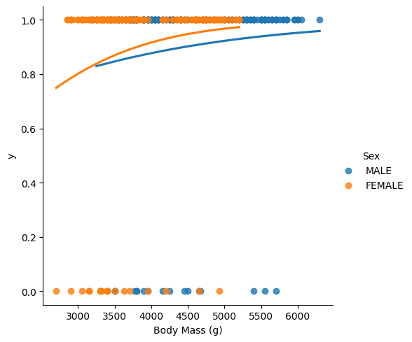
We see below that the line of best fit between Flipper Length (mm) and Clutch Completion doesn’t really differ between the value of Sex, thus there is likely no interaction between the two explanatory variables on Clutch Completion.
sns.lmplot(x='Flipper Length (mm)', y='y', hue='Sex', data=df_cleaned, logistic=True, ci=False)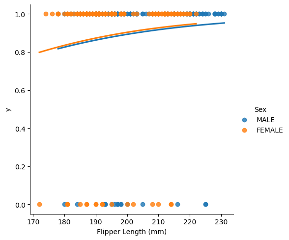
5. Model Data Preprocessing
0/1 Response Variable
Has already been created in previous section (y).
X_df = df_cleaned.drop(['Clutch Completion'], axis=1)
X_df.head()| Species | Island | Body Mass (g) | Flipper Length (mm) | Sex | y | |
|---|---|---|---|---|---|---|
| 0 | Adelie Penguin (Pygoscelis adeliae) | Torgersen | 3750.0 | 181.0 | MALE | 1 |
| 1 | Adelie Penguin (Pygoscelis adeliae) | Torgersen | 3800.0 | 186.0 | FEMALE | 1 |
| 2 | Adelie Penguin (Pygoscelis adeliae) | Torgersen | 3250.0 | 195.0 | FEMALE | 1 |
| 3 | Adelie Penguin (Pygoscelis adeliae) | Torgersen | 3450.0 | 193.0 | FEMALE | 1 |
| 4 | Adelie Penguin (Pygoscelis adeliae) | Torgersen | 3650.0 | 190.0 | MALE | 1 |
y_df = df_cleaned['y']
y_df.head()0 1
1 1
2 1
3 1
4 1
Name: y, dtype: int64numeric_df = df_cleaned[['Body Mass (g)', 'Flipper Length (mm)']]scaler_df = StandardScaler()
scaled_expl_vars = scaler_df.fit_transform(numeric_df)
X_scaler = pd.DataFrame(scaled_expl_vars, columns=numeric_df.columns)
X_scaler.head()| Body Mass (g) | Flipper Length (mm) | |
|---|---|---|
| 0 | -0.568475 | -1.426752 |
| 1 | -0.506286 | -1.069474 |
| 2 | -1.190361 | -0.426373 |
| 3 | -0.941606 | -0.569284 |
| 4 | -0.692852 | -0.783651 |
cat_df = df_cleaned[['Species', 'Island', 'Sex']]indicator_Df = pd.get_dummies(cat_df, drop_first=True, dtype=int)
indicator_Df| Species_Chinstrap penguin (Pygoscelis antarctica) | Species_Gentoo penguin (Pygoscelis papua) | Island_Dream | Island_Torgersen | Sex_MALE | |
|---|---|---|---|---|---|
| 0 | 0 | 0 | 0 | 1 | 1 |
| 1 | 0 | 0 | 0 | 1 | 0 |
| 2 | 0 | 0 | 0 | 1 | 0 |
| 3 | 0 | 0 | 0 | 1 | 0 |
| 4 | 0 | 0 | 0 | 1 | 1 |
| ... | ... | ... | ... | ... | ... |
| 328 | 0 | 1 | 0 | 0 | 0 |
| 329 | 0 | 1 | 0 | 0 | 0 |
| 330 | 0 | 1 | 0 | 0 | 1 |
| 331 | 0 | 1 | 0 | 0 | 0 |
| 332 | 0 | 1 | 0 | 0 | 1 |
333 rows × 5 columns
X_df = pd.concat([X_scaler, indicator_Df], axis=1)
X_df| Body Mass (g) | Flipper Length (mm) | Species_Chinstrap penguin (Pygoscelis antarctica) | Species_Gentoo penguin (Pygoscelis papua) | Island_Dream | Island_Torgersen | Sex_MALE | |
|---|---|---|---|---|---|---|---|
| 0 | -0.568475 | -1.426752 | 0 | 0 | 0 | 1 | 1 |
| 1 | -0.506286 | -1.069474 | 0 | 0 | 0 | 1 | 0 |
| 2 | -1.190361 | -0.426373 | 0 | 0 | 0 | 1 | 0 |
| 3 | -0.941606 | -0.569284 | 0 | 0 | 0 | 1 | 0 |
| 4 | -0.692852 | -0.783651 | 0 | 0 | 0 | 1 | 1 |
| ... | ... | ... | ... | ... | ... | ... | ... |
| 328 | 0.892957 | 0.931283 | 0 | 1 | 0 | 0 | 0 |
| 329 | 0.799674 | 1.002739 | 0 | 1 | 0 | 0 | 0 |
| 330 | 1.919069 | 1.502928 | 0 | 1 | 0 | 0 | 1 |
| 331 | 1.234995 | 0.788372 | 0 | 1 | 0 | 0 | 0 |
| 332 | 1.483749 | 0.859828 | 0 | 1 | 0 | 0 | 1 |
333 rows × 7 columns
6. Feature Selection with k-Fold Cross-Validation
cross_val = KFold(n_splits=5, shuffle=True, random_state=207)
cross_valKFold(n_splits=5, random_state=207, shuffle=True)log_model = LogisticRegression()test_fold_auc = cross_val_score(log_model, X_df, y_df, cv=cross_val, scoring='roc_auc')
print('Test Fold AUC values:', test_fold_auc)
print('Mean Test Fold AUC:', test_fold_auc.mean())
print('Std Test Fold AUC:', test_fold_auc.std())Test Fold AUC values: [0.74285714 0.67580645 0.47669492 0.61530172 0.67070218]
Mean Test Fold AUC: 0.636272482607794
Std Test Fold AUC: 0.08945770087016215Backwards Elimination
X_without_bodymass = X_df[['Flipper Length (mm)', 'Species_Chinstrap penguin (Pygoscelis antarctica)', 'Species_Gentoo penguin (Pygoscelis papua)', 'Island_Dream', 'Island_Torgersen', 'Sex_MALE']]
test_fold_auc = cross_val_score(log_model, X_without_bodymass, y_df, cv=cross_val, scoring='roc_auc')
print('Test Fold AUC values:', test_fold_auc)
print('Mean Test Fold AUC:', test_fold_auc.mean())
print('Std Test Fold AUC:', test_fold_auc.std())Test Fold AUC values: [0.72857143 0.66935484 0.58580508 0.60344828 0.69128329]
Mean Test Fold AUC: 0.6556925841734292
Std Test Fold AUC: 0.05362538958406206X_without_flipper = X_df[['Body Mass (g)', 'Species_Chinstrap penguin (Pygoscelis antarctica)', 'Species_Gentoo penguin (Pygoscelis papua)', 'Island_Dream', 'Island_Torgersen', 'Sex_MALE']]
test_fold_auc = cross_val_score(log_model, X_without_flipper, y_df, cv=cross_val, scoring='roc_auc')
print('Test Fold AUC values:', test_fold_auc)
print('Mean Test Fold AUC:', test_fold_auc.mean())
print('Std Test Fold AUC:', test_fold_auc.std())Test Fold AUC values: [0.73333333 0.64677419 0.48940678 0.66918103 0.65375303]
Mean Test Fold AUC: 0.6384896735319757
Std Test Fold AUC: 0.08057864717938311X_without_sex = X_df[['Flipper Length (mm)', 'Body Mass (g)', 'Species_Chinstrap penguin (Pygoscelis antarctica)', 'Species_Gentoo penguin (Pygoscelis papua)', 'Island_Dream', 'Island_Torgersen']]
test_fold_auc = cross_val_score(log_model, X_without_sex, y_df, cv=cross_val, scoring='roc_auc')
print('Test Fold AUC values:', test_fold_auc)
print('Mean Test Fold AUC:', test_fold_auc.mean())
print('Std Test Fold AUC:', test_fold_auc.std())Test Fold AUC values: [0.72619048 0.67258065 0.48516949 0.63685345 0.65375303]
Mean Test Fold AUC: 0.634909417557487
Std Test Fold AUC: 0.08066258037144781X_without_species = X_df[['Flipper Length (mm)', 'Body Mass (g)', 'Island_Dream', 'Island_Torgersen', 'Sex_MALE']]
test_fold_auc = cross_val_score(log_model, X_without_species, y_df, cv=cross_val, scoring='roc_auc')
print('Test Fold AUC values:', test_fold_auc)
print('Mean Test Fold AUC:', test_fold_auc.mean())
print('Std Test Fold AUC:', test_fold_auc.std())Test Fold AUC values: [0.61190476 0.73387097 0.45974576 0.58081897 0.55447942]
Mean Test Fold AUC: 0.5881639753524004
Std Test Fold AUC: 0.08885267404971228X_without_island = X_df[['Flipper Length (mm)', 'Body Mass (g)', 'Species_Chinstrap penguin (Pygoscelis antarctica)', 'Species_Gentoo penguin (Pygoscelis papua)', 'Sex_MALE']]
test_fold_auc = cross_val_score(log_model, X_without_island, y_df, cv=cross_val, scoring='roc_auc')
print('Test Fold AUC values:', test_fold_auc)
print('Mean Test Fold AUC:', test_fold_auc.mean())
print('Std Test Fold AUC:', test_fold_auc.std())Test Fold AUC values: [0.75238095 0.69516129 0.45974576 0.6174569 0.65133172]
Mean Test Fold AUC: 0.6352153242190901
Std Test Fold AUC: 0.09867722151365058X_without_bodymass_flipper = X_df[['Species_Chinstrap penguin (Pygoscelis antarctica)', 'Species_Gentoo penguin (Pygoscelis papua)', 'Island_Dream', 'Island_Torgersen', 'Sex_MALE']]
test_fold_auc = cross_val_score(log_model, X_without_bodymass_flipper, y_df, cv=cross_val, scoring='roc_auc')
print('Test Fold AUC values:', test_fold_auc)
print('Mean Test Fold AUC:', test_fold_auc.mean())
print('Std Test Fold AUC:', test_fold_auc.std())Test Fold AUC values: [0.71309524 0.59032258 0.54766949 0.59267241 0.6598063 ]
Mean Test Fold AUC: 0.6207132038916885
Std Test Fold AUC: 0.05849439264431433X_without_bodymass_sex = X_df[['Flipper Length (mm)', 'Species_Chinstrap penguin (Pygoscelis antarctica)', 'Species_Gentoo penguin (Pygoscelis papua)', 'Island_Dream', 'Island_Torgersen']]
test_fold_auc = cross_val_score(log_model, X_without_bodymass_sex, y_df, cv=cross_val, scoring='roc_auc')
print('Test Fold AUC values:', test_fold_auc)
print('Mean Test Fold AUC:', test_fold_auc.mean())
print('Std Test Fold AUC:', test_fold_auc.std())Test Fold AUC values: [0.72857143 0.66935484 0.58580508 0.6950431 0.71186441]
Mean Test Fold AUC: 0.6781277724509611
Std Test Fold AUC: 0.05013839724785316X_without_bodymass_species = X_df[['Flipper Length (mm)', 'Island_Dream', 'Island_Torgersen', 'Sex_MALE']]
test_fold_auc = cross_val_score(log_model, X_without_bodymass_species, y_df, cv=cross_val, scoring='roc_auc')
print('Test Fold AUC values:', test_fold_auc)
print('Mean Test Fold AUC:', test_fold_auc.mean())
print('Std Test Fold AUC:', test_fold_auc.std())Test Fold AUC values: [0.57619048 0.63387097 0.65783898 0.5700431 0.52905569]
Mean Test Fold AUC: 0.5933998441008348
Std Test Fold AUC: 0.0464159117389316X_without_bodymass_island = X_df[['Flipper Length (mm)', 'Species_Chinstrap penguin (Pygoscelis antarctica)', 'Species_Gentoo penguin (Pygoscelis papua)', 'Sex_MALE']]
test_fold_auc = cross_val_score(log_model, X_without_bodymass_island, y_df, cv=cross_val, scoring='roc_auc')
print('Test Fold AUC values:', test_fold_auc)
print('Mean Test Fold AUC:', test_fold_auc.mean())
print('Std Test Fold AUC:', test_fold_auc.std())Test Fold AUC values: [0.70238095 0.66774194 0.57944915 0.61314655 0.65496368]
Mean Test Fold AUC: 0.6435364545037486
Std Test Fold AUC: 0.04291827162162581X_without_bodymass_sex_flipper = X_df[[ 'Species_Chinstrap penguin (Pygoscelis antarctica)', 'Species_Gentoo penguin (Pygoscelis papua)', 'Island_Dream', 'Island_Torgersen']]
test_fold_auc = cross_val_score(log_model, X_without_bodymass_sex_flipper, y_df, cv=cross_val, scoring='roc_auc')
print('Test Fold AUC values:', test_fold_auc)
print('Mean Test Fold AUC:', test_fold_auc.mean())
print('Std Test Fold AUC:', test_fold_auc.std())Test Fold AUC values: [0.73095238 0.59677419 0.54449153 0.69181034 0.69612591]
Mean Test Fold AUC: 0.6520308705484796
Std Test Fold AUC: 0.06981890117769665X_without_bodymass_sex_island = X_df[['Flipper Length (mm)', 'Species_Chinstrap penguin (Pygoscelis antarctica)', 'Species_Gentoo penguin (Pygoscelis papua)']]
test_fold_auc = cross_val_score(log_model, X_without_bodymass_sex_island, y_df, cv=cross_val, scoring='roc_auc')
print('Test Fold AUC values:', test_fold_auc)
print('Mean Test Fold AUC:', test_fold_auc.mean())
print('Std Test Fold AUC:', test_fold_auc.std())Test Fold AUC values: [0.70357143 0.67096774 0.57838983 0.69181034 0.68159806]
Mean Test Fold AUC: 0.6652674817593937
Std Test Fold AUC: 0.04476298260022657X_without_bodymass_sex_species = X_df[['Flipper Length (mm)', 'Island_Dream', 'Island_Torgersen']]
test_fold_auc = cross_val_score(log_model, X_without_bodymass_sex_species, y_df, cv=cross_val, scoring='roc_auc')
print('Test Fold AUC values:', test_fold_auc)
print('Mean Test Fold AUC:', test_fold_auc.mean())
print('Std Test Fold AUC:', test_fold_auc.std())Test Fold AUC values: [0.57142857 0.64677419 0.65995763 0.69396552 0.55932203]
Mean Test Fold AUC: 0.6262895886470574
Std Test Fold AUC: 0.052206458916240865Now that the mean test fold AUC has stopped increasing we can say that the best logistic regression model includes the following variables:
Flipper Length (mm)SpeciesIsland
The best model has a Mean Test Fold AUC of 0.6781277724509611 \(\pm\) 0.05013839724785316
X_best = X_df[['Flipper Length (mm)', 'Species_Chinstrap penguin (Pygoscelis antarctica)', 'Species_Gentoo penguin (Pygoscelis papua)', 'Island_Dream', 'Island_Torgersen']]
test_fold_auc = cross_val_score(log_model, X_best, y_df, cv=cross_val, scoring='roc_auc')
print('Test Fold AUC values:', test_fold_auc)
print('Mean Test Fold AUC:', test_fold_auc.mean())
print('Std Test Fold AUC:', test_fold_auc.std())Test Fold AUC values: [0.72857143 0.66935484 0.58580508 0.6950431 0.71186441]
Mean Test Fold AUC: 0.6781277724509611
Std Test Fold AUC: 0.050138397247853167. Best Model Discussion
Here, we merge our best features matrix and target array in order to split the dataset.
final_df = pd.concat([X_best, y_df], axis=1)df_train, df_test=train_test_split(final_df, test_size=0.2, random_state=207)
df_train| Flipper Length (mm) | Species_Chinstrap penguin (Pygoscelis antarctica) | Species_Gentoo penguin (Pygoscelis papua) | Island_Dream | Island_Torgersen | y | |
|---|---|---|---|---|---|---|
| 1 | -1.069474 | 0 | 0 | 0 | 1 | 1 |
| 279 | 2.003117 | 0 | 1 | 0 | 0 | 1 |
| 174 | -0.712196 | 1 | 0 | 1 | 0 | 1 |
| 75 | -0.354918 | 0 | 0 | 0 | 1 | 1 |
| 104 | -0.212006 | 0 | 0 | 0 | 0 | 1 |
| ... | ... | ... | ... | ... | ... | ... |
| 83 | -0.783651 | 0 | 0 | 1 | 0 | 1 |
| 257 | 1.502928 | 0 | 1 | 0 | 0 | 1 |
| 78 | -0.712196 | 0 | 0 | 1 | 0 | 1 |
| 50 | -1.069474 | 0 | 0 | 0 | 0 | 1 |
| 6 | -0.426373 | 0 | 0 | 0 | 1 | 0 |
266 rows × 6 columns
Then we create the train features matrix and target array in order to fit the model.
x_train = df_train[['Flipper Length (mm)', 'Species_Chinstrap penguin (Pygoscelis antarctica)', 'Species_Gentoo penguin (Pygoscelis papua)', 'Island_Dream', 'Island_Torgersen']]
y_train = df_train['y']Fitted Model
log_model.fit(x_train, y_train)LogisticRegression()In a Jupyter environment, please rerun this cell to show the HTML representation or trust the notebook.
On GitHub, the HTML representation is unable to render, please try loading this page with nbviewer.org.
LogisticRegression()
log_model.intercept_array([2.83531012])log_model.coef_array([[ 0.36187172, -0.72803128, -0.4582208 , -0.43334694, -0.75551075]])Equation
\[\begin{align*} &\quad{Clutch Completion} = \\ &\quad \;\;\;\; 2.83531012 \\ &\quad + 0.36187172\_Flipper\_Length (mm) \\ &\quad - 0.72803128\_Species\_Chinstrap\_penguin (Pygoscelis\_antarctica) \\ &\quad - 0.4582208\_Species\_Gentoo\_penguin (Pygoscelis\_papua) \\ &\quad - 0.43334694\_Island\_Dream \\ &\quad - 0.75551075\_Island\_Torgersen \\ \end{align*}\]
x_train.corr()| Flipper Length (mm) | Species_Chinstrap penguin (Pygoscelis antarctica) | Species_Gentoo penguin (Pygoscelis papua) | Island_Dream | Island_Torgersen | |
|---|---|---|---|---|---|
| Flipper Length (mm) | 1.000000 | -0.195260 | 0.869489 | -0.410813 | -0.279304 |
| Species_Chinstrap penguin (Pygoscelis antarctica) | -0.195260 | 1.000000 | -0.393592 | 0.691391 | -0.215579 |
| Species_Gentoo penguin (Pygoscelis papua) | 0.869489 | -0.393592 | 1.000000 | -0.569275 | -0.304290 |
| Island_Dream | -0.410813 | 0.691391 | -0.569275 | 1.000000 | -0.311805 |
| Island_Torgersen | -0.279304 | -0.215579 | -0.304290 | -0.311805 | 1.000000 |
Multicollinearity
Using a threashold of 0.7, there is one pair of variables with a strong correlation, being Flipper Length and Species(Gentoo penguin) have a correlation coefficient of 0.869. This means that the dataset exhibits an issue with multicollinearity.
Slope Interpretations
Although we have Z-score scaled the numerical variables so that the standard deviations were the same, our dataset’s issue with multicollinearity means we are not able to interpret the magnitudes of the slopes as indicating how important they are to predicting Clutch Completion. They may be misleading.
Overfitting Explanatory Variables
The model with Flipper Length, Species, and Island is determined to be the best performing model. This means that some of the original variables, such as Body Mass and Sex, were likely overfitting the model. This is suggested by that Body Mass and Sex both had a weak association with clutch completion. Body mass and Sex both also had weak associations with the current variables in the models. This means that Body mass and Sex are both irrelevant explanatory variables for our purposes.
Test ROC and AUC
x_test = df_test[['Flipper Length (mm)', 'Species_Chinstrap penguin (Pygoscelis antarctica)', 'Species_Gentoo penguin (Pygoscelis papua)', 'Island_Dream', 'Island_Torgersen']]
y_test = df_test['y']df_test["predictive_prob"]=log_model.predict_proba(x_test)[:,1]
df_test| Flipper Length (mm) | Species_Chinstrap penguin (Pygoscelis antarctica) | Species_Gentoo penguin (Pygoscelis papua) | Island_Dream | Island_Torgersen | y | predictive_prob | |
|---|---|---|---|---|---|---|---|
| 230 | 0.645461 | 0 | 1 | 0 | 0 | 1 | 0.931545 |
| 200 | -0.998018 | 1 | 0 | 1 | 0 | 1 | 0.787978 |
| 202 | -0.712196 | 1 | 0 | 1 | 0 | 1 | 0.804743 |
| 59 | -0.640740 | 0 | 0 | 0 | 0 | 1 | 0.931083 |
| 171 | -0.283462 | 1 | 0 | 1 | 0 | 0 | 0.827977 |
| ... | ... | ... | ... | ... | ... | ... | ... |
| 8 | -0.712196 | 0 | 0 | 0 | 1 | 1 | 0.860815 |
| 140 | -0.783651 | 0 | 0 | 1 | 0 | 1 | 0.892677 |
| 2 | -0.426373 | 0 | 0 | 0 | 1 | 1 | 0.872751 |
| 268 | 1.360017 | 0 | 1 | 0 | 0 | 1 | 0.946305 |
| 289 | 1.360017 | 0 | 1 | 0 | 0 | 1 | 0.946305 |
67 rows × 7 columns
fprs, tprs, thresholds = roc_curve(y_true=y_test, y_score=df_test['predictive_prob'])
auc = roc_auc_score(y_true=y_test, y_score=df_test['predictive_prob'])
auc0.7285714285714286def plot_roc(fprs, tprs, auc, lw=2):
plt.plot(fprs, tprs, color='darkorange', lw=lw,
label='ROC curve (area = '+str(round(auc,3))+')')
plt.plot([0, 1], [0, 1], color='navy', lw=lw, linestyle='--')
plt.xlabel('False Positive Rate')
plt.ylabel('True Positive Rate')
plt.title('ROC Curve')
plt.legend(loc="lower right")
plt.show()plot_roc(fprs, tprs, auc)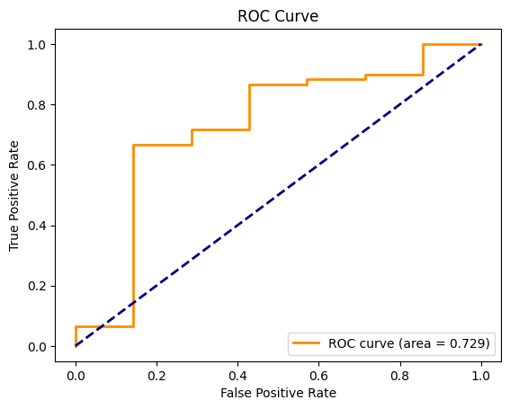
Test ROC and AUC
Looking at the ROC and AUC curve, the AUC score of 0.729 is fairly close to 1. The logistic model will do a decent job when classifiying the observations in the test dataset.
def fpr_tpr_thresh(y, pred_prob, thresh):
yhat = 1*(pred_prob >= thresh)
tn, fp, fn, tp = confusion_matrix(y_true=y, y_pred=yhat).ravel()
tpr = tp / (fn + tp)
fpr = fp / (fp + tn)
return {'threshold': thresh,
'fpr': fpr,
'tpr': tpr}data = []
for thresh in np.arange(0,1.01,.01):
data.append(fpr_tpr_thresh(y_test, df_test['predictive_prob'], thresh))
df_thresh = pd.DataFrame(data=data)df_thresh[df_thresh['tpr']>=0.6].nsmallest(1,'fpr')| threshold | fpr | tpr | |
|---|---|---|---|
| 89 | 0.89 | 0.142857 | 0.666667 |
Best Predictive Probability Threshold
The ROC curve shows that there is a section where the both the FPR is close to zero (about 0.15) and TPR is close to 1 (about 0.7), so there exists some predictive probability threshold that will get us somewhat close to an ideal classification.
For our purposes, we will prioritize a high TPR with a low FPR and select a predictive probability threshold of 0.89.
The test FPR and TPR of the classification that would be created are 0.142857 and 0.666667 respectfully.
This means that when predicting Clutch Completion, about 66.7% of completed clutches were were accurately predicted to be complete and 14.3% of not completed clutches were incorrectly predicted to be complete.
8. Additional Analysis/Insight
KMeans Clustering
cluster_df = X_df.copy()
cluster_df| Body Mass (g) | Flipper Length (mm) | Species_Chinstrap penguin (Pygoscelis antarctica) | Species_Gentoo penguin (Pygoscelis papua) | Island_Dream | Island_Torgersen | Sex_MALE | |
|---|---|---|---|---|---|---|---|
| 0 | -0.568475 | -1.426752 | 0 | 0 | 0 | 1 | 1 |
| 1 | -0.506286 | -1.069474 | 0 | 0 | 0 | 1 | 0 |
| 2 | -1.190361 | -0.426373 | 0 | 0 | 0 | 1 | 0 |
| 3 | -0.941606 | -0.569284 | 0 | 0 | 0 | 1 | 0 |
| 4 | -0.692852 | -0.783651 | 0 | 0 | 0 | 1 | 1 |
| ... | ... | ... | ... | ... | ... | ... | ... |
| 328 | 0.892957 | 0.931283 | 0 | 1 | 0 | 0 | 0 |
| 329 | 0.799674 | 1.002739 | 0 | 1 | 0 | 0 | 0 |
| 330 | 1.919069 | 1.502928 | 0 | 1 | 0 | 0 | 1 |
| 331 | 1.234995 | 0.788372 | 0 | 1 | 0 | 0 | 0 |
| 332 | 1.483749 | 0.859828 | 0 | 1 | 0 | 0 | 1 |
333 rows × 7 columns
First we will need to decide on the number of clusters for our KMeans clustering. We are utilizing the Elbow Method to determine the number of optimal clusters by fitting the model with a range of values and plotting the sum of squared distances from each point to its assigned center. As the beginning of the elbow is at 2, we will use 2 as our optimal k.
from sklearn.cluster import KMeans
import matplotlib.pyplot as plt
inertia = []
for k in range(1, 10):
kmeans = KMeans(n_clusters=k, random_state=42)
kmeans.fit(cluster_df)
inertia.append(kmeans.inertia_)
plt.figure(figsize=(10, 6))
plt.plot(range(1, 10), inertia, marker='o')
plt.title('Elbow Method For Optimal k')
plt.xlabel('Number of clusters')
plt.ylabel('Inertia')
plt.show()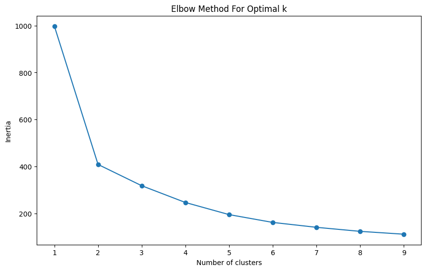
Now we will fit the KMeans model and analyze the resulting clusters.
k_optimal = 2
kmeans = KMeans(n_clusters=k_optimal, random_state=42)
clusters = kmeans.fit_predict(cluster_df)
cluster_df['Cluster'] = clusters
cluster_summary = cluster_df.groupby('Cluster').mean()
print(cluster_summary) Body Mass (g) Flipper Length (mm) \
Cluster
0 -0.624650 -0.656245
1 1.094428 1.149784
Species_Chinstrap penguin (Pygoscelis antarctica) \
Cluster
0 0.316038
1 0.008264
Species_Gentoo penguin (Pygoscelis papua) Island_Dream \
Cluster
0 0.000000 0.575472
1 0.983471 0.008264
Island_Torgersen Sex_MALE
Cluster
0 0.221698 0.495283
1 0.000000 0.520661 Based on our cluster summary, we can see the following:
Cluster 0:
- Both Body Mass and Flipper Length features are noticebly lower in cluster 0 compared to cluster 1 indicating these penguins are generally smaller in size.
- Cluster 0 contains a higher proportion of Chinstrap Penguins and Adelie Penguins, and no Gentoo Penguins. This means Chinstrap and Adelie penguins are smaller in size.
- Majority of Cluster 0 penguins live on Dream Island (57.5) and a significant portion live on Torgersen Island (22.2%)
- Approximately 49.5% are male.
Cluster 1:
- The Body Mass and Flipper Length is significantly higher indicating these penguins are larger
- Dominated by Gentoo penguins
- Almost exclusively Biscoe Island
- Slightly more males (52.1%)
Principal Component Analysis
Now we will use PCA to reduce the dataset to two principal components and visualize the clusters.
from sklearn.decomposition import PCA
pca = PCA(n_components=2)
principal_components = pca.fit_transform(cluster_df)
plt.figure(figsize=(10, 6))
plt.scatter(principal_components[:, 0], principal_components[:, 1], c=clusters, cmap='viridis', marker='o', alpha=0.5)
plt.colorbar(label='Cluster')
plt.xlabel('Principal Component 1')
plt.ylabel('Principal Component 2')
plt.title('Cluster Visualization on PCA-reduced Data')
plt.show()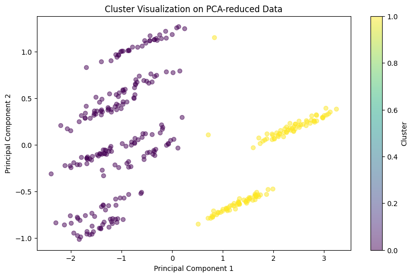
Based on our two Principal Components (PC1 and PC2), the two clusters are well-separated along PC1 which likely showing the variations in body size and species amongst the two clusters. PC2 on the other hand is showing variances less related to physical size such as geographical distribution.
Interpretation
Based on the clear separations between the two clusters we can see a strong correlation between the species and physical traits like body mass and flipper length. The clusters also show influence of island location on clustering indicating possible evolutionary adaptations specific to each island.
Clutch Completion by Cluster
We are analyzing clutch completion rates within each cluster to see if there are significant differences in reproductive success between the clusters. This will help tell us whether physical traits or locations correlate with higher or lower rates of clutch completion which is necessary to know for someone who is involved in conservation.
cluster_df['clutch_completion'] = y_df
cluster_df| Body Mass (g) | Flipper Length (mm) | Species_Chinstrap penguin (Pygoscelis antarctica) | Species_Gentoo penguin (Pygoscelis papua) | Island_Dream | Island_Torgersen | Sex_MALE | Cluster | clutch_completion | |
|---|---|---|---|---|---|---|---|---|---|
| 0 | -0.568475 | -1.426752 | 0 | 0 | 0 | 1 | 1 | 0 | 1 |
| 1 | -0.506286 | -1.069474 | 0 | 0 | 0 | 1 | 0 | 0 | 1 |
| 2 | -1.190361 | -0.426373 | 0 | 0 | 0 | 1 | 0 | 0 | 1 |
| 3 | -0.941606 | -0.569284 | 0 | 0 | 0 | 1 | 0 | 0 | 1 |
| 4 | -0.692852 | -0.783651 | 0 | 0 | 0 | 1 | 1 | 0 | 1 |
| ... | ... | ... | ... | ... | ... | ... | ... | ... | ... |
| 328 | 0.892957 | 0.931283 | 0 | 1 | 0 | 0 | 0 | 1 | 0 |
| 329 | 0.799674 | 1.002739 | 0 | 1 | 0 | 0 | 0 | 1 | 1 |
| 330 | 1.919069 | 1.502928 | 0 | 1 | 0 | 0 | 1 | 1 | 1 |
| 331 | 1.234995 | 0.788372 | 0 | 1 | 0 | 0 | 0 | 1 | 1 |
| 332 | 1.483749 | 0.859828 | 0 | 1 | 0 | 0 | 1 | 1 | 1 |
333 rows × 9 columns
clutch_completion_rates = cluster_df.groupby('Cluster')['clutch_completion'].mean()
print(clutch_completion_rates)Cluster
0 0.867925
1 0.942149
Name: clutch_completion, dtype: float64sns.barplot(x=clutch_completion_rates.index, y=clutch_completion_rates.values)
plt.title('Clutch Completion Rates by Cluster')
plt.xlabel('Cluster')
plt.ylabel('Average Clutch Completion Rate')
plt.show()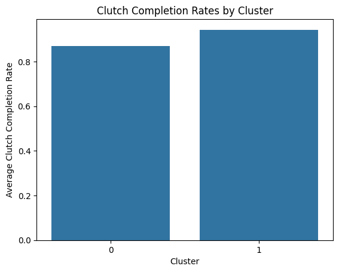
This bar chart shows that both clusters exhibit a high clutch completion rate with Cluster 1 showing a slightly higher rate. Both clusters having a high clutch completion rate suggests that regardless of the physical traits, species composition, and geographical location, the penguins generally have a high success rate in completing their clutches. This is a positive indicator from a reproductive success perspective and means that no specific group of penguins needs extra attention towards conservation.
Understanding these clusters can help in targeting conservation efforts more effectively. This is because they tell us what features belong to what penguin and which type of penguins need more focus, helping fulfill our research motivation
KMeans Clustering and PCA also help fulfill our secondary research goal as the clusters showed the nature of the relationship between the explanatory variables (similar nature variables were clustered together) and it also showed us the nature of the relationship between the explanatory variables and the response variable (we can see that all the explanatory variables contribute to a high clutch completion)
9. Conclusion
Our model has Mean Test Fold AUC of 0.6781277724509611 with a STD of 0.05013839724785316 and a Mean AUC of 0.7285714285714286 with our highest TPR being 66.7% with the lowest possible FPR 14.3%. Based on these values, I would recommend our model to be used by the animal biologist/conservationist to be used for further research or conservation purposes. This is because our model has a mean AUC of 0.7-0.8, which is considered acceptable and the model has a reasonable discrimination ability between positive and negative classes. Also, the relatively high TPR (close 70%) and low FPR means our model give a good inital estimate as to the number of penguins that completed clutch. This would help with conservation efforts as it can give a rough estimate as to how many penguins will be born seeing as when there are 2 eggs at least one chick survives.
However, our model does have its shortcomings. We do not know for sure whether our chosen model will yield the highest possible average test AUC as we did not try other feature selection methods while determining our best model such as regularization. In our search for the highest possible test AUC we could have used some forms of unsupervised machine learning such as Neural Networks or Random Forests if we were looking for a more complete analysis.
One shortcoming of our analysis is that our model suffers from multicollinearity so we cannot use the magnitude of the slopes to determine which variables are the most important at predicting clutch completition. Another shortcoming is that in the original dataset, 90% of the datapoints had clutch completion as true whereas 10% had false. The lack of false datapoints means our model will be biased towards the majority class because doing so would yield a high accuracy (90% in this case) even if it fails to accurately predict the minority class.
Based on our current analysis, for the future we can possibly analyze and model the temporal trends in clutch completion rates among penguins, determining if there are specific times or conditions under which clutch completion is more likely. We can possibly do this using Time-Series Analysis Techniques like ARIMA or seasonal decomposition.